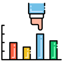
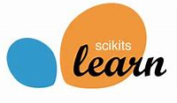

Meu postifolio
Vicente F. Moita
Programador python
Junior em data science e machine learnin
participação em competições do kaggle.
estudante de Eletrônica no senai
sei programar sistemas eletrônicos.
conhecimento em Java Script básico


Conhecimento para - Data Science
Linguagem de programação Python
Biblioteca de analise e manipulação de dados
Biblioteca python para trbalhar com matrizes e matematica
Biblioteca de visualização de dados
Biblioteca de visualização de dados

Estatistica Basica

biblioteca de aprendizado de máquina
Conhecimentos para - Front End

visualização de dados
com Seaborn

algoritimos com scikit-learn

algoritimos com scikit-learn
Aprendendo...

visualização de dados
com Seaborn
algoritimos com scikit-learn
algoritimos com scikit-learn

algoritimos com scikit-learn
Formação
Senai - Fundação Zerrenner
Curso: Eletrônica
Ensino medio: concluido
2016 - 2018

linkedin learning:
Ciência de Dados Formação Básica
Da professora Jessica Temporal
coursera:
machine learnin - Da Stanford University
Projetos
Repositorio com todos os meus estudos de DataScience
saiba mais...Interface Grafica com python e tkinter - dados do covid-19
saiba mais...Sistema de cadastro de produtos com Python e Streamlit
saiba mais...algoritimo de machine learnin que concede ou nao emprestimo
a um deterimnado perfil
Interesses - hobis - objetivos
Carreira - cientista de Dados
Estou Começando minha jornada nesse mudo "novo" de dados.
E tenho como objetivo me tornar um cientista de dados em uma empresa
do mercado finaceiro.
Sempre gostei de Grandes negocios e investimentos.
E seria uma otima esperiencia trabalhar em uma empresa como a
XP ou até mesmo a B3. Podendo ajudar com seus dados e sua inteligencia.
Empreendedorismo
Estou Começando minha jornada nesse mudo "novo" de dados.
E tenho como objetivo me tornar um cientista de dados em uma empresa
do mercado finaceiro.
Sempre gostei de Grandes negocios e investimentos.
E seria uma otima esperiencia trabalhar em uma empresa como a
XP ou até mesmo a B3. Podendo ajudar com seus dados e sua inteligencia.
Hobis - livros
Estou Começando minha jornada nesse mudo "novo" de dados.
E tenho como objetivo me tornar um cientista de dados em uma empresa
do mercado finaceiro.
Sempre gostei de Grandes negocios e investimentos.
E seria uma otima esperiencia trabalhar em uma empresa como a
XP ou até mesmo a B3. Podendo ajudar com seus dados e sua inteligencia.